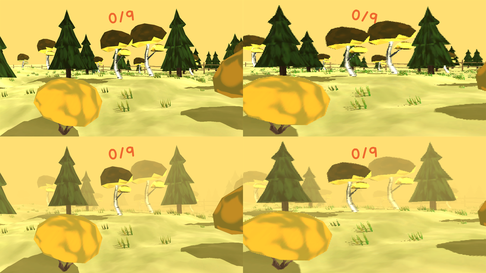
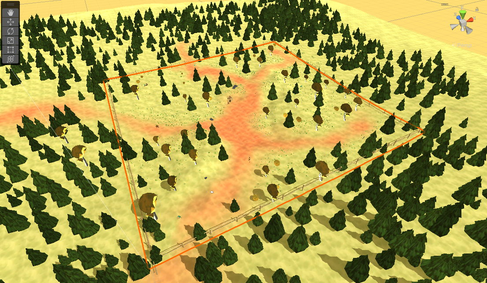

Sari Halonen
Peliohjelmoinnin opiskelija Kotkasta
The Life of Will Power
Raportti Xamk Game Jam II aikana tehdystä pelistä
Jamin ja pelin teema
Jamin teemana oli 'willpower'. Päädyimme tiimin kesken ottamaan teeman melko kirjaimellisesti ja pelin päähenkilön nimeksi tuli '"Will Power'. Peli koostuu kolmesta (kahdesta) pienemmästä projektista, joista yksi oli kahden tiimiläisen yhteistyönä tekemä ja kaksi muuta yksittäisten tiimiläisten tuotoksia. Yksi ei ehtinyt valmistua, joten sitä ei voitu sisällyttää lopulliseen peliin. Itse olin osana kahden hengen tiimiä.
Ensimmäinen osa on melko utopistinen kuvaus päähenkilön "syntymästä", joka aikajaksoltaan osuu jonnekin aikaan ennen henkilöän syntymää. Will haluaisi olla 3D-objekti ja pelissä kävellään ympäri 3D-maailmassa juttelemassa billboardeina toteutetuille 2D-hahmoille. Kun kaikilta kentällä olevilta hahmoille on juteltu, peliin spawnaa leijuvia velhoja, jotka pelaajan tulee päihittää. Pelin idea on melko vaikea selittää ja alempana onkin linkki koko pelin läpipeluuvideoon.
Tekniset jutut
| Pelimoottori | Unity 2021.3.8f1 |
|---|---|
| Alusta | PC/WebGL |
Grafiikkatyyli
Low-pony 3D-maailma + 2D-billboard-hahmot, kamerassa filter joka saa grafiikat muistuttamaan PS1-aikaisia grafiikoita. 3D-mallit on tosiasiassa melko hirveän näköisiä mutta filtteri saa pelin näyttämään paljon paremmalta, kuin miltä se ilman filtteriä näyttäisi. Peliin lisättiin myös sumu jottei pelaaja näkisi koko pienehköä pelimaailmaa kerralla ja se sopi muutenkin pelin tyyliin.
Vasemmalla pelinäkymä ilman filtteriä ja sumun kanssa, oikealla filtterillä sekä sumun kanssa. Klikkaa kuva suuremmaksi.
Projektin toteutus
Pelin suunnitteluun osallistui tottakai molemmat peliä työstävät ja suunnittelua tehtiin jonkin verran koko jamin ajan. Pelille ei mitään kovin hyvää suunnitelmaa alun perin edes ollut, mutta jamin edetessä peli alkoi pikkuhiljaa muovautua johonkin suuntaan, josta sitä oli mukava kehittää eteenpäin. Ideoita heiteltiin sitä mukaan, kun niitä tuli mieleen ja yhdessä mietittiin ja päätettiin toteutetaanko kyseinen idea vai ei. Peli toteutettiin melko tiiviissä yhteistyössä työparin kanssa mutta molemmilla oli myös selvästi toisen hommista erillään olevia vastuualueita. Työparini hoiti kaikki 2D-taiteen, kun taas itse tein kaikki tarvittavat 3D-mallit tekstuureineen ja asettelin niitä pelimaailmaan. Koodaamiseen osallistuivat molemmat eikä koodattavia skriptejä jaettu mitenkään järjestelmällisesti vaan koodattiin mitä juuri sillä hetkellä tarvittiin.
Tämä oli ensimmäinen Game Jamini ja kokemus oli erittäin positiivinen. Lopputuote ei tietenkään jamipelinä ole mikään viimeistelty tuotos, mutta oli hauskaa voida laittaa kaikenmoisia ehkä tyhmiäkin ideoita peliin. Harvemmin ns. kunnollisissa projekteissa voi heitellä hyvin kokeellisia ominaisuuksia peliin sitä mukaa mitä haluaa juuri sillä hetkellä kokeilla ja tämä jamipeli oli sellaiseen hommaan oikein erinomainen projekti.
Pelimaailma koostuu 9-laatasta, joista pelaaja voi liikkua vain keskimmäisellä. Klikkaa kuva suuremmaksi.
Ongelmia
Jamille tyypillisesti aika meinasi tietenkin loppua kesken ja viimehetken muutoksia tehdessä alkoi olla jo kiire. Suurin ongelma kuitenkin oli se miten erilaiselta valaistus näytti sumun kanssa buildatussa pelissä verrattuna editoriin. Tälle syyksi paljastui se, ettei valaistusta missään vaiheessa "bakettu" jossa tuntui sillä hetkellä kestävän ikuisuus. Peli kuitenkin saatiin "valmiiksi" ajoissa ja jamipelin tiedostoa pystyi vielä ajan loppumisen jälkeen muokkaamaan onneksi sillä siihen oli pelien yhdistämisestä johtuen eksynyt pari pientä bugia.
Video
Käytetyt tutoriaalit ja lähteet
| Lähde | Tutoriaalin käyttötarkoitus |
|---|---|
| 'Thomas Friday' Youtube-tutoriaali | Pixelated look in Unity |